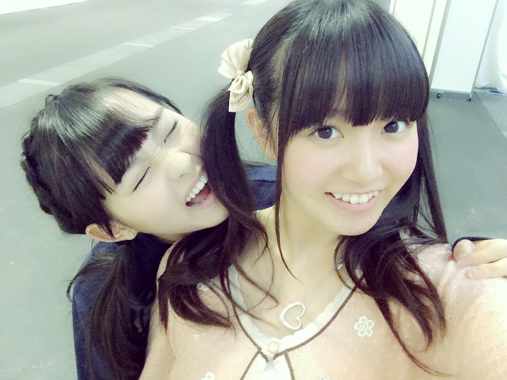
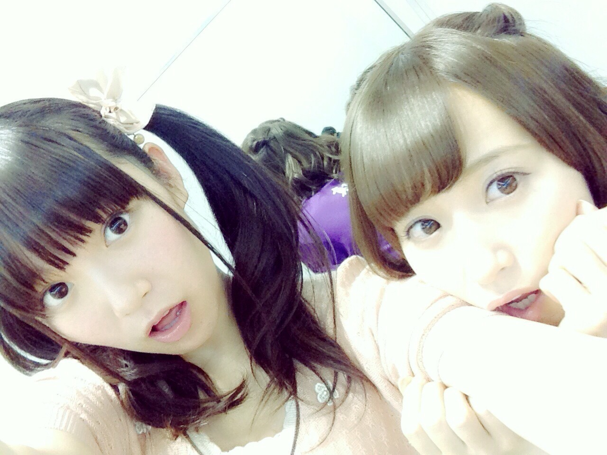

| 2014/09 15 Mon | ひめたん-OoO-その479 |
京都 個別握手会！
来てくださったみなさん
ありがとうございました∩(・ω・)∩
握手会が開催されるの久々だったから
みなさんとお話するのも久々で
いやー楽しかったなあー
まずはお留守番ちーむのみんなに報告☆
1部＊ストレート

2部＊巻きおろし
3部＊安定のついんてーる

1部は
のぎ天で着てたうさちゃん部屋着
2部3部は
きいろのワンピースに
ぴんくのカーディガン
写メ貼ってみたけど
全身見えないねごめんね(>_<)
ツアーの感想とか
のぎ天の感想とか
あと多かったのは乃木のの！
みんなちゃんとひめたんのこと
見てくれてるんだなーって思って
嬉しかったな～＊
はじめましてのひとも
いっぱい来てくれたー♡
これから仲良くしてねよろしくね( ˇωˇ )
関西圏では京都しかやってないから
お久しぶりのひとも
いっぱい会いにきてくれたね♪
次の京都までまた日が空いちゃうけど
絶対行くから待っててね！
あと、いつも京都でやるときは
広島から来てくれるひとも多くて
地元とーく楽しみ☆
おにゃのこはついんてーるや りぼん多くて
ひめたんとお揃いだったね(っ´ω`c)
ぼーいずも蝶ネクタイやぴんくの服で
意識高いよ～いつもありがとね
次回もぜひトライしてみてね～＊
あと、のぎのぎ公式グッズのTシャツ
着てくれるひとがいっぱいいるんだけどね
種類が増えたなーって思った！
みんなはどのTシャツが好きー？
次は名古屋の全握・個握！
9月は握手会いっぱいあって楽しみですな～
遊びに来てくれるみなさん
よろしくね∩(・ω・)∩
あ、ちなみに......

また みさせんぱいに
食べられちゃった(〃ω〃)
この写メは
みさせんぱいのブログに貼ってたやつの
別バージョンなんだよー
今日いちご味だったよ だってよみなさん♡
乃木のの聴いてくれたかなー？
永島聖羅ちゃん・畠中清羅ちゃん でした！
神宮スペシャルでお送りしました～
いやーもうせいたん面白すぎるでしょ(笑)
ひめたん笑いすぎて
まともに喋ってなかったよ(笑)
え、何したって？いや言ってもいいけど
まだ放送前の地域があるから
言わないけどさ(・∀・)
あ、そうそう
これだけは言っておきたい
私にお便りを選ぶ権利はないのです(´・ω・｀)
ほんとだよ！これほんと！(笑)
次回は 高山一実ちゃん・堀未央奈ちゃん☆
お楽しみに～
BABY METALちゃんのライブ
行ってきたよー

せっかくだから
それっぽいお洋服で行ってみたの( ｀ω´ )
ライブってのはやるのと観るのとじゃ
また違って楽しいなって
思いました☆
陽菜ちゃんあすかりん
一緒に来てくれてありがとうね！
すーめた ゆいめたちゃん もあめたちゃん
ライブに関わってくださった
すべてのみなさん
ステキなライブをありがとうございました！

 誕生日やからビームしてください
誕生日やからビームしてください
風邪も治らないのでビームしてください
ひめたんびーむ(<・ω・>)
 ひめたんは
ひめたんは
ラブライブのアニメは見ましたか？
最近ライブが終わって落ち着いたので
一気に1期観たのー！(お願いツッコまないで)
えりちの魅力に気づいてしまった！
えりち可愛いよー(＊´ω`＊)
誰か一緒にアニメイト行こー！えりちー！
 コンビニでサラダ買ったけど
コンビニでサラダ買ったけど
ドレッシング買い忘れたらどうしてる？
わーこれショックなやつやー
サラダは新鮮なのがいちばん美味しいから
多分手つけてみるけど
完食できないような気がするね～
今回はひめたん46おやすみさせてね
ごめんね(´・ω・｀)
あと質問返しも
いつもよりちょっと少なめで
ごめんね～
いつもたくさんのコメント
ありがとうございます
質問答えてくれてありがとね！読んだよ！
なんかー思ったのがー
あなたは素直で直球なひとなのねとか
あなたはツンデレなのねとか
あなたはMなのかしらとか
同じ質問しても
そのひとの人となりってのが
表れるもんだよね(゜ω゜)
私は...どんなひとって思われてるのかしら......
読書の秋、スポーツの秋、食欲の秋
乃木坂の秋ってひともいたね！
いろんな秋があっていいな～(＊´v`＊)
ひめたんはーそうだなー
ぼやっとしてたらあっという間に
終わっちゃうんだろうから
毎日何かに一生懸命でいたいなーと
ぼんやりそう思いましたとさ。
(＊´・ω・＊)
コメント(668)
2014/09/15 23:36